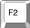
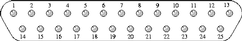

| Purchase | Copyright © 2002 Paul Sheer. Click here for copying permissions. | Home |
|
|
| |
This chapter explains a little about PC hardware. Readers who have built their own PC or who have configuring myriad devices on Windows can probably skip this section. It is added purely for completeness. This chapter actually comes under the subject of Microcomputer Organization, that is, how your machine is electronically structured.
Inside your machine you will find a single, large circuit board called the motherboard (see Figure 3.1). It is powered by a humming power supply and has connector leads to the keyboard and other peripheral devices. [Anything that is not the motherboard, not the power supply and not purely mechanical.]
The motherboard contains several large microchips and many small ones. The important ones are listed below.
There is more stuff on the motherboard:
In summary, the peripheral and the CPU need to cooperate on three things: the I/O port, the IRQ, and the DMA. If any two cards clash by using either the same I/O port, IRQ number, or DMA channel then they won't work (at worst your machine will crash). [Come to a halt and stop responding.]
![[*]](crossref.png) .
.
Two IDE hard drives can be connected to a single IDE ribbon. The ribbon alone has nothing to distinguish which connector is which, so the drive itself has jumper pins on it (see Figure 3.2) that can be set to one of several options. These are one of Master (MA), Slave (SL), Cable Select (CS), or Master-only/Single-Drive/and-like. The MA option means that your drive is the ``first'' drive of two on this IDE ribbon. The SL option means that your drive is the ``second'' drive of two on this IDE ribbon. The CS option means that your machine is to make its own decision (some boxes only work with this setting), and the Master-only option means that there is no second drive on this ribbon.
There might also be a second IDE ribbon, giving you a total of four possible drives. The first ribbon is known as IDE1 (labeled on your motherboard) or the primary ribbon, and the second is known as IDE2 or the secondary ribbon. Your four drives are then called primary master, primary slave, secondary master, and secondary slave. Their labeling under LINUX is discussed in Section 18.4.
The ``CMOS'' [Stands for Complementary Metal Oxide
Semiconductor, which has to do with the technology used to store
setup information through power-downs.] is a small application built into ROM.
It is also known as the ROM BIOS configuration. You
can start it instead of your operating system (OS) by pressing  or  (or
something else) just after you switch your machine on. There will usually be
a message
Press <key> to enter setup to explain this. Doing so
will take you inside the CMOS program where you can change your machine's
configuration. CMOS programs are different between motherboard manufacturers.
(or
something else) just after you switch your machine on. There will usually be
a message
Press <key> to enter setup to explain this. Doing so
will take you inside the CMOS program where you can change your machine's
configuration. CMOS programs are different between motherboard manufacturers.
Inside the CMOS, you can enable or disable built-in devices (like your mouses and serial ports); set your machine's ``hardware clock'' (so that your machine has the correct time and date); and select the boot sequence (whether to load the operating system off the hard drive or CD-ROM--which you will need for installing LINUX from a bootable CD-ROM). Boot means to start up the computer. [The term comes from the lack of resources with which to begin: the operating system is on disk, but you might need the operating system to load from the disk--like trying to lift yourself up from your ``bootstraps.''] You can also configure your hard drive. You should always select Hardrive autodetection [Autodetection refers to a system that, though having incomplete information, configures itself. In this case the CMOS program probes the drive to determine its capacity. Very old CMOS programs required you to enter the drive's details manually.] whenever installing a new machine or adding/removing disks. Different CMOSs will have different procedures, so browse through all the menus to see what your CMOS can do.
The CMOS is important when it comes to configuring certain devices built into the motherboard. Modern CMOSs allow you to set the I/O ports and IRQ numbers that you would like particular devices to use. For instance, you can make your CMOS switch COM1 with COM2 or use a non-standard I/O port for your parallel port. When it comes to getting such devices to work under LINUX, you will often have to power down your machine to see what the CMOS has to say about that device. More on this in Chapter 42.
Serial ports facilitate low speed communications over a short distance using simple 8 core (or less) cable. The standards are old and communication is not particularly fault tolerant. There are so many variations on serial communication that it has become somewhat of a black art to get serial devices to work properly. Here I give a short explanation of the protocols, electronics, and hardware. The Serial-HOWTO and Modem-HOWTO documents contain an exhaustive treatment (see Chapter 16).
Some devices that communicate using serial lines are:
A device is connected to your computer by a cable with a 9-pin or 25-pin, male or female connector at each end. These are known as DB-9 () or DB-25 () connectors. Only eight of the pins are ever used, however. See Table 3.1.
The way serial devices communicate is very straightforward: A stream of bytes is sent between the computer and the peripheral by dividing each byte into eight bits. The voltage is toggled on a pin called the TD pin or transmit pin according to whether a bit is 1 or 0. A bit of 1 is indicated by a negative voltage (-15 to -5 volts) and a bit of 0 is indicated by a positive voltage (+5 to +15 volts). The RD pin or receive pin receives bytes in a similar way. The computer and the serial device need to agree on a data rate (also called the serial port speed) so that the toggling and reading of voltage levels is properly synchronized. The speed is usually quoted in bps (bits per second). Table 3.2 shows a list of possible serial port speeds.
A typical mouse communicates between 1,200 and 9,600 bps. Modems communicate at 19,200, 38,400, 57,600, or 115,200 bps. It is rare to find serial ports or peripherals that support the speeds not blocked in Table 3.2.
To further synchronize the peripheral with the computer, an additional start bit proceeds each byte and up to two stop bits follow each byte. There may also be a parity bit which tells whether there is an even or odd number of 1s in the byte (for error checking). In theory, there may be as many as 12 bits sent for each data byte. These additional bits are optional and device specific. Ordinary modems communicate with an 8N1 protocol--8 data bits, No parity bit, and 1 stop bit. A mouse communicates with 8 bits and no start, stop, or parity bits. Some devices only use 7 data bits and hence are limited to send only ASCII data (since ASCII characters range only up to 127).
Some types of devices use two more pins called the request to send (RTS) and clear to send (CTS) pins. Either the computer or the peripheral pull the respective pin to +12 volts to indicate that it is ready to receive data. A further two pins call the DTR (data terminal ready) pin and the DSR (data set ready) pin are sometimes used instead--these work the same way, but just use different pin numbers. In particular, domestic modems make full use of the RTS/CTS pins. This mechanism is called RTS/CTS flow control or hardware flow control. Some simpler devices make no use of flow control at all. Devices that do not use flow control will loose data which is sent without the receiver's readiness.
Some other devices also need to communicate whether they are ready to receive data, but do not have RTS/CTS pins (or DSR/DTR pins) available to them. These emit special control characters, sent amid the data stream, to indicate that flow should halt or restart. This is known as software flow control. Devices that optionally support either type of flow control should always be configured to use hardware flow control. In particular, a modem used with LINUX must have hardware flow control enabled.
Two other pins are the ring indicator (RI) pin and the carrier detect (CD) pin. These are only used by modems to indicate an incoming call and the detection of a peer modem, respectively.
The above pin assignments and protocol (including some hard-core electrical specifications which I have omitted) are known as RS-232. It is implemented using a standard chip called a 16550 UART (Universal Asynchronous Receiver-Transmitter) chip. RS-232 is easily effected by electrical noise, which limits the length and speed at which you can communicate: A half meter cable can carry 115,200 bps without errors, but a 15 meter cable is reliable at no more than 19,200 bps. Other protocols (like RS-423 or RS-422) can go much greater distances and there are converter appliances that give a more advantageous speed/distance tradeoff.
Telephone lines, having been designed to carry voice, have peculiar limitations when it comes to transmitting data. It turns out that the best way to send a binary digit over a telephone line is to beep it at the listener using two different pitches: a low pitch for 0 and a high pitch for 1. Figure 3.3 shows this operation schematically.
Converting voltages to pitches and back again is known as modulation-demodulation and is where the word modem comes from. The word baud means the number of possible pitch switches per second, which is sometimes used interchangeably with bps. There are many newer modulation techniques used to get the most out of a telephone line, so that 57,600 bps modems are now the standard (as of this writing). Modems also do other things to the data besides modulating it: They may pack the data to reduce redundancies (bit compression) and perform error detection and compensation (error correction). Such modem protocols are given names like V.90 (57,600 bps), V.34 (33,600 bps or 28,800 bps), V.42 (14,400 bps) or V.32 (14,400 bps and lower). When two modems connect, they need to negotiate a ``V'' protocol to use. This negotiation is based on their respective capabilities and the current line quality.
A modem can be in one of two states: command mode or connect mode. A modem is connected if it can hear a peer modem's carrier signal over a live telephone call (and is probably transmitting and receiving data in the way explained), otherwise it is in command mode. In command mode the modem does not modulate or transmit data but interprets special text sequences sent to it through the serial line. These text sequences begin with the letters AT and are called ATtention commands. AT commands are sent by your computer to configure your modem for the current telephone line conditions, intended function, and serial port capability--for example, there are commands to: enable automatic answering on ring; set the flow control method; dial a number; and hang up. The sequence of commands used to configure the modem is called the modem initialization string. How to manually issue these commands is discussed in Section 32.6.3, 34.3, and 41.1 and will become relevant when you want to dial your Internet service provider (ISP).
Because each modem brand supports a slightly different set of modem commands, it is worthwhile familiarizing yourself with your modem manual. Most modern modems now support the Hayes command set--a generic set of the most useful modem commands. However, Hayes has a way of enabling hardware flow control that many popular modems do not adhere to. Whenever in this book I give examples of modem initialization, I include a footnote referring to this section. It is usually sufficient to configure your modem to ``factory default settings'', but often a second command is required to enable hardware flow control. There are no initialization strings that work on all modems. The web sites http://www.spy.net/~dustin/modem/ and http://www.teleport.com/~curt/modems.html are useful resources for finding out modem specifications.